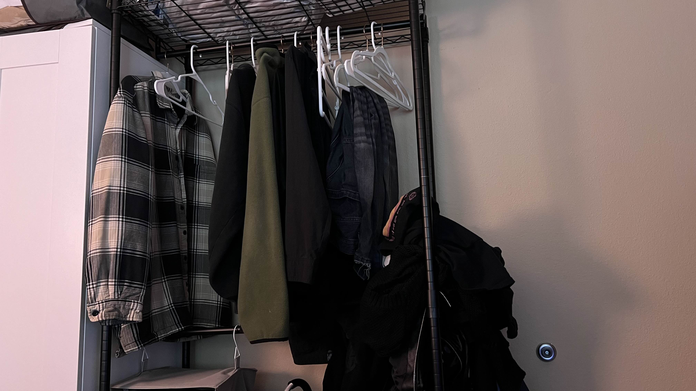
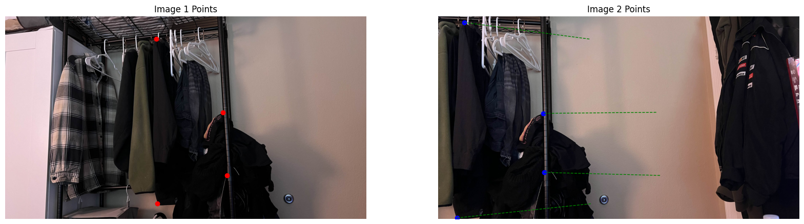
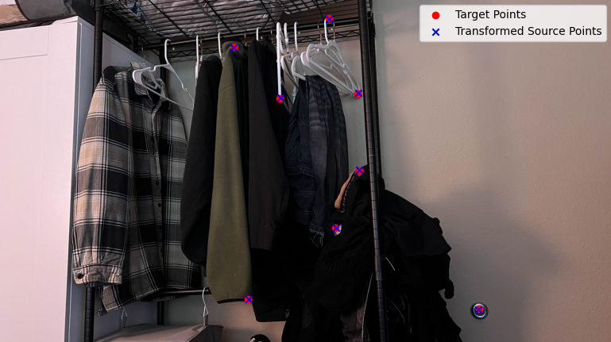
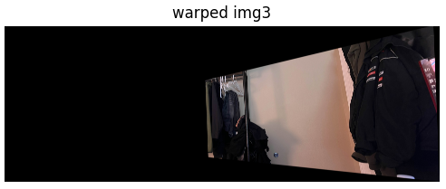
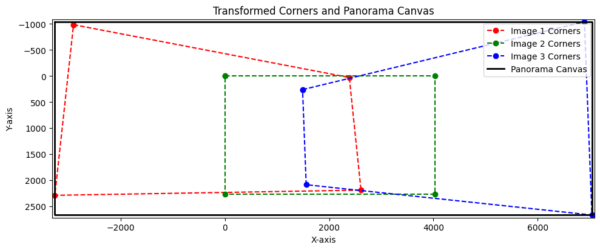

Part A: Image Warping and Mosaicing
Introduction
This project involves creating a seamless panorama by stitching together three overlapping images. The process includes selecting corresponding points between images, computing homographies, warping images to align them, and blending the warped images into a cohesive mosaic. The objective is to demonstrate image alignment techniques and advanced image processing using Python.

Image 1: Left

Image 2: Center (Reference)

Image 3: Right
Step-by-Step Process for Part A
1. Correspondence Point Selection
The first step in panorama creation is to identify corresponding points between overlapping images. These points serve as key landmarks that guide the alignment process.
Using an interactive tool, I manually selected eight corresponding points between Image 1 and Image 2, and between Image 3 and Image 2. These points typically include facial landmarks, edges, and corners to ensure accurate alignment.
The selected points are saved in a JSON file for reuse and to maintain consistency across different runs.

Correspondence Points between Image 1 and Image 2

Correspondence Points between Image 2 and Image 3
2. Homography Computation
With the correspondence points identified, the next step is to compute the homography matrices that map points from one image to another. Homography is a transformation that maps the perspective of one image to another, allowing for proper alignment.
This project implements the Direct Linear Transformation (DLT) algorithm manually through the computeH function.
The computeH function takes in two sets of corresponding points and constructs a system of linear equations to solve for the homography matrix.
By performing Singular Value Decomposition (SVD) on the constructed matrix, the function identifies the homography that best aligns the source points to the target points.
Two homographies are computed:
- H1to2: Maps Image 1 to Image 2
- H3to2: Maps Image 3 to Image 2
These homographies are essential for warping the images so that they align perfectly with the reference image (Image 2).
Homography H1to2: Image 1 → Image 2

Homography H3to2: Image 3 → Image 2
3. Image Warping
Using the computed homographies, each image is warped to align with the reference image (Image 2). This involves transforming the perspective of Image 1 and Image 3 so that their overlapping regions match those of Image 2.
The warping process is implemented manually through the warpImage function.
This function performs inverse mapping, where each pixel in the panorama canvas is mapped back to the source image using the inverse of the homography matrix.
This method ensures accurate pixel alignment and allows for precise control over the warping process.
The warpImage function handles necessary offsets to manage negative coordinates and ensure that all images fit within the panorama canvas.
By iterating over each pixel in the output panorama, the function determines the corresponding source pixel and assigns the appropriate color values.

Warped Image 1 aligned to Image 2

Warped Image 3 aligned to Image 2
4. Panorama Size Computation
Before blending the warped images, it's crucial to determine the size of the panorama canvas. This ensures that all images fit perfectly without any cropping or excessive empty space.
The pano_size function calculates the transformed corners of each image after warping and determines the minimum and maximum extents.
These calculations provide the required panorama dimensions and necessary offsets to translate images appropriately.
By aggregating the transformed corners, the function identifies the overall boundaries of the panorama, accounting for all three images. This step is vital for setting up the canvas on which the final mosaic will be created.

Panorama Size and Offsets
credit to my housemate for helping with this visualization.
5. Image Blending
Once all images are warped and aligned on the panorama canvas, the final step is to blend them seamlessly. This is achieved using feather blending, which smoothly transitions overlapping regions to minimize visible seams.
The blend_imgs function employs feathering masks created by the feather_mask function.
These masks are based on the distance of each pixel from the image borders, ensuring that pixels closer to the center have higher weights.
By applying these masks, the blending process reduces abrupt changes in pixel intensities, resulting in a cohesive and visually appealing panorama.
The blending process involves iterating over each warped image, applying the feathering mask, and accumulating the weighted pixel values. The final panorama is obtained by normalizing the accumulated values to maintain proper color intensities.

Final Blended Mosaic Panorama
Part A: Additional Examples
Additional Mosaics
Here are two additional mosaics created using different sets of images and correspondence points:

Image 1 (Ex. 2)

Image 2 (Ex. 2)

Image 3 (Ex. 2)

Correspondence Points between Image 1 and Image 2 (Ex. 2)

Correspondence Points between Image 3 and Image 2 (Ex. 2)
Homography H1to2 (Ex. 2): Image 1 → Image 2
Homography H3to2 (Ex. 2): Image 3 → Image 2

Final Mosaic (Ex. 2)
"Failure" Case
In this "failure" case, the correspondence points were correctly selected, and the process occurred correctly -- however, the actual photos taken did not have enough perspective overlap, resulting in a successfully executed stitch. Albeit, a difficult one to look at.

Correspondence Points between Image 1 and Image 2 (Ex. 3)

Correspondence Points between Image 2 and Image 3 (Ex. 3)

Final Mosaic (Ex. 3)
Homography H1to2 (Ex. 3): Image 1 → Image 2
Homography H3to2 (Ex. 3): Image 3 → Image 2
Takeaways for Part A
This project successfully demonstrates the creation of a seamless panorama by stitching multiple
images using custom functions like computeH and warpImage. By
manually handling homography computations and image warping, I gained a deeper understanding
of image alignment and transformation techniques, which enhances my post-processing workflows.
As someone doing freelance photography as a hobby, these skills have helped give me a way to capture and present expansive landscapes and immersive scenes in a different way. Understanding the mechanics behind image stitching allows me to achieve precise alignment and seamless blending in my photography, enriching the visual quality of my hobbyist projects and expanding my creative capabilities. It's been lots of fun.
Part B: Feature Matching for Autostitching
Step-by-Step Process for Part B
Overview of Major Functions and Configurations
In Part B, the focus shifts to automating the panorama creation process through feature matching and homography computation. The following major functions and configurations were implemented:
- harris_corners1() & harris_corners2(): detects corner features using Harris detector with edge discarding and thresholding.
- extract_features: extracts rotation-invariant feature descriptors from keypoints.
- match_features_ratio_test: matches descriptors using Lowe's Ratio Test to filter unreliable matches.
- computeH_ransac: computes homography matrices using RANSAC for robust estimation.
- blend_imgs: blends warped images into the final mosaic using feather blending.
Additionally, three distinct configuration settings allow users to select processing modes based on their needs:
- Configuration 1: basic detection and matching with default parameters.
- Configuration 2: enhanced detection with stricter matching thresholds.
- Configuration 3: advanced feature extraction with multi-scale analysis.
This setup provides flexibility and ensures optimal performance across different scenarios as the configurations allow the user to pick between different preset settings of threshold levels, # of corners, and iteration amounts.
1. Detecting Corner Features in an Image
I utilized the Harris corner detector to identify potential keypoints in each image. The harris_corners1() and harris_corners2() functions manage corner detection with edge discarding and thresholding based on the selected configuration mode. This step is crucial for locating points in the image with significant intensity changes, which serve as reliable features for matching.

Harris Corners in Image 1

Harris Corners in Image 2

Harris Corners in Image 3
2. Adaptive Non-Maximal Suppression (ANMS)
After detecting the initial Harris corners, I applied Adaptive Non-Maximal Suppression (ANMS) to retain the most prominent and well-distributed keypoints. ANMS helps in reducing redundancy by ensuring that keypoints are spread out across the image, enhancing the robustness of feature matching.

ANMS Corners in Image 1

ANMS Corners in Image 2

ANMS Corners in Image 3
3. Feature Matching
For each detected corner, I extracted feature descriptors using the extract_features() function.
These descriptors are normalized patches surrounding each keypoint, capturing local image information that remains consistent despite changes in scale and orientation.
The robustness helps in having accurate feature matching across different images.
I employed Lowe's Ratio Test, implemented in the lowes() function, to match feature descriptors between image pairs.
This test involves comparing the distances between descriptors and accepting matches that meet a predefined ratio threshold.
The ratio test effectively filters out ambiguous matches, retaining only those that are most likely to be correct correspondences.

Image 1 Descriptors

Image 2 Descriptors

Image 3 Descriptors

Feature Matches between Image 1 and Image 2

Feature Matches between Image 3 and Image 2
4. Using RANSAC to Compute a Homography
With the matched features in hand, I computed the homography matrices using the RANSAC algorithm via the computeH_ransac function.
RANSAC iteratively selects random subsets of matches to estimate the homography, identifying the model that best fits the majority of correspondences (inliers) while excluding outliers.
This robust estimation ensures that the resulting homography accurately aligns the images despite the presence of erroneous matches.

Match Verification between Image 1 and Image 2

Match Verification between Image 3 and Image 2

Final Mosaic
5. Producing a Mosaic
Using the computed homographies, I warped and blended images to produce automatic mosaics. This step is essentially the same as with Part A (warping, panorama size computation, etc.) but utliizes the new values that we have attained through 4B.
Below are examples of the three configuration settings working on a single set of images:
[FAILURE] Final Mosaic Level 1

Final Mosaic Level 2

Final Mosaic Level 3

Final Mosaic Part A Example
Part B: Additional Examples
To further demonstrate the effectiveness of the automatic stitching process, here are two additional mosaics created using different configurations and image sets:

ANMS Corners - Image 1 (Ex. 2)

ANMS Corners - Image 2 (Ex. 2)

ANMS Corners - Image 3 (Ex. 2)

Final Mosaic - Level 2 Config (Ex. 2)
[FAILURE] Final Mosaic - Level 1 Config (Ex. 3a)
Final Mosaic - Level 2 Config (Ex. 3b)
Final Mosaic - Level 3 Config (Ex. 3c)
Takeaways for Part B
Feature matching in Part B was particularly interesting to me as it demonstrated the precision and effectiveness of algorithms in aligning images seamlessly. By implementing automatic feature matching and homography computation, the process showcased how computer vision techniques can accurately identify points that overlap between images. This enhances the efficiency and scalability of creating mosaics by a lot -- and observing the integration of feature matching has helped in my understanding of advanced image processing methods in practical settings.